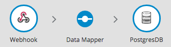
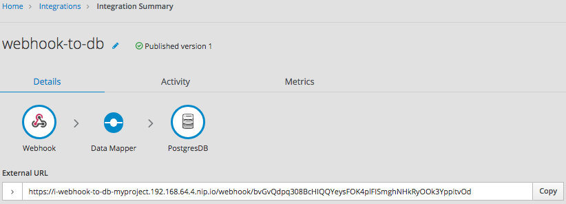

Creating an integration that is triggered by an HTTP request (Webhook)
You can trigger execution of a simple integration by sending an HTTP GET or POST
request to an HTTP endpoint that {prodname} exposes. The following topics
provide details:
General procedure for using the {prodname} webhook
To trigger execution of an integration with an HTTP GET or POST
request, you must do the following:
-
Decide whether you want to send a
GETorPOSTrequest to {prodname}. -
Plan your integration to handle this request.
-
Create the connection that finishes the integration.
{prodname} provides a Webhook connection that you use as the start connection.
-
Create any other connections that you want to add to the integration.
-
Create the integration:
-
Add the Webhook connection as the start connection.
-
Add the finish connection and then any other connections that are required in the integration. The finish connection and any middle connections handle the HTTP request that triggers execution of the integration. It is up to you to choose and specify the most appropriate HTTP request for accomplishing your goals. Keep the following in mind:
-
Add a connection to the application that contains the data that you want to obtain or that contains the data that you want to update.
-
A
GETrequest is limited to specification of key/value parameters. -
A
POSTrequest can provide an arbitrary body, such as an XML or JSON instance. -
{prodname} returns only an HTTP status header and does not return any data. Consequently, you can define an integration that is triggered by a
GETrequest and that updates data rather than obtaining data. Likewise, you can define an integration that is triggered by aPOSTrequest and that obtains data rather than updating data.
-
-
Add a data mapper step after the Webhook connection.
For a
GETrequest, map the parameter fields in the HTTP request to the data fields in the next connection.For a
POSTrequest, you might have specified the output data shape in the request by passing a JSON instance, JSON schema, XML instance, or XML schema. If you did not, then when you add a Webhook connection as the start connection of an integration, {prodname} prompts you to specify the output data type. If you do not, then the default Webhook connection output data type is in JSON format. -
Add any other steps that the integration needs.
-
-
Publish the integration and wait for it to be Running.
-
Go to the integration summary page and copy the external URL that {prodname} provides.
-
Modify this external URL to construct your
GETorPOSTrequest. -
Implement the application that sends the HTTP
GETorPOSTrequest to {prodname}.
Creating an integration that an HTTP request can trigger
To trigger execution of an integration with an HTTP GET or POST request,
add a Webhook connection as the integration’s start connection.
-
In the {prodname} panel on the left, click Integrations.
-
Click Create Integration.
-
On the Choose a connection page, click the Webhook connection.
-
On the Choose an action page, select the Incoming Webhook action.
In the Webhook Configuration page, {prodname} displays the webhook token that {prodname} generates for this integration.
When you construct the HTTP request, this token is the last part of the URL. After you publish this integration and it is running, {prodname} displays the {prodname} external URL, which has this token at the end.
-
Click Next.
-
In the Specify Output Data Type page:
-
Click in the Select Type field, and select JSON schema.
-
In the Definition field, paste the JSON schema that defines the data types of the parameters in the HTTP request. See About the JSON schema for specifying request parameters.
-
In the Data Type Name field, specify a name for this data type. Although this is optional, if you specify a name, it appears in the data mapper Sources list, which can make it easier to correctly map fields.
-
Optionally, in the Data Type Description field, provide some information that helps you distinguish this data type.
-
Click Next.
-
-
Add the finish connection to the integration.
-
Add any other needed connections.
-
Add any other needed steps.
-
Immediately after the start connection, add a data mapper step.
-
Click Publish, give the integration a name and optionally, a description, and click Save and publish.
How {prodname} handles HTTP requests
You can specify an HTTP GET or POST request to trigger execution of
a simple integration. Although a GET request usually obtains data and a
POST request usually updates data, you can use either request
to trigger an integration that does either operation. Any parameters
in the request are available for mapping to data fields in the
next connection that is in the integration. For details, see
About the JSON schema for specifying request parameters.
A Webhook connection only passes the data it receives to the next connection in the integration. When {prodname} receives an HTTP request, it:
-
Returns an HTTP status header to the requester. When a request successfully triggers execution of an integration, the {prodname} return code is
201. When a request fails to trigger execution of an integration, the {prodname} return code is5xx. -
Does not return any other data to the requester. In other words, there is no data in the HTTP body of the response that contains the status header.
-
Passes the data in the request to the next connection in the integration.
This means that you can define a simple integration that is triggered by
a GET request and that updates data rather than obtaining data.
Likewise, you can define a simple integration that is triggered by a POST request
and that obtains data rather than updating data.
Guidelines for an HTTP client that invokes a {prodname} Webhook
When you implement a client that sends an HTTP request to {prodname}, your implementation should:
-
Add to the {prodname}-provided external URL to construct a URL that makes a
GETorPOSTrequest. -
In the URL request, specify HTTP header and query parameter values whose data types adhere to the
io:syndesis:webhookJSON schema. See About the JSON schema for specifying request parameters. When header and query parameters adhere to this data type specification, then you can map parameter fields to fields that the next connection in the integration can process. -
If the request succeeds, handle a returned success code of
201. -
If the request fails, handle an HTTP
5xxerror code. -
Not expect any other response from {prodname}. In other words, sending the request does not directly return data to the requesting client other than the return code.
About the JSON schema for specifying request parameters
In an integration, you typically map header and query parameters in the HTTP request to data fields that the next connection in the integration can process. To make this possible, when you add the Webhook connection to the integration, specify the output data type in a JSON schema that has the following structure:
{
"$schema": "http://json-schema.org/schema#",
"id": "io:syndesis:webhook",
"type": "object",
"properties": {
"parameters": {
"type": "object",
"properties": { (1)
}
},
"body": {
"type": "object",
"properties": { (2)
}
}
}
}To add the data structures that you need, in the JSON instance for your HTTP request:
| 1 | Specify query parameters in the properties section under the parameters object. |
| 2 | Specify the HTTP body schema in the properties section under the body object. |
While all data that an HTTP client sends is available in the integration, when a Webhook connection’s data shape conforms to this JSON schema, then query parameters and body content are available for mapping.
For examples, see How to specify HTTP requests.
How to specify HTTP requests
The following examples show how to specify HTTP requests for the {prodname} Webhook.
Consider an integration that starts with a Webhook connection and then creates a row in the Todo table of the {prodname}-provided database:

During creation of this integration, when you add the Webhook start
connection, you specify its output data type with a JSON instance that
has this content: {"todo":"text"}:

When you add the PostgresDB connection as the finish connection, you select the Invoke SQL action and specify this SQL statement:
INSERT INTO TODO (TASK) VALUES (:#TASK)
After you add the database connection, you add a mapping step:

You save and publish the integration. When it is running, you can copy the external URL that {prodname} provides:

To understand the parts of the external URL, consider this sample URL:
https://i-webhook-to-db-myproject.192.168.64.4.nip.io/webhook/bvGvQdpq308BcHIQQYeysFOK4plFISmghNHkRyOOk3YppitvOd
| Value | Description |
|---|---|
|
{prodname} always inserts this value at the beginning of the URL. |
|
The name of the integration. |
|
The OpenShift namespace that contains the pod that is running the integration. |
|
The DNS domain that is configured for OpenShift. This indicates the {prodname} environment that is providing the webhook. |
|
Appears in each Webhook connection URL. |
|
Webhook connection token that {prodname} provides when you add a Webhook connection to an integration. The token is a random string that provides security in that it makes the URL hard to discern, which prevents anyone else from sending a request. In a request, you can specify the token that {prodname} provides or you can define your own. If you define your own, ensure that it is hard to guess. |
As you can see in the external URL, {prodname} constructs the host name from the name of the integration, the name of the OpenShift namespace, and the OpenShift DNS domain. {prodname} removes illegal characters and converts spaces to hyphens. In the sample external URL, this is the host name:
https://i-webhook-to-db-myproject.192.168.64.4.nip.io
To use curl to invoke the webhook, you would specify the command as follows:
curl -H 'Content-Type: application/json' -d '{"todo":"from webhook"}' https://i-webhook-to-db-myproject.192.168.64.4.nip.io/webhook/bvGvQdpq308BcHIQQYeysFOK4plFISmghNHkRyOOk3YppitvOd
-
The
-Hoption specifies the HTTPContent-Typeheader. -
The
-doption sets the HTTP method toPOSTby default.
Execution of this command triggers the integration. The database
finish connection inserts a new task into the tasks table. To see this,
display the Todo app at, for example, https://todo-myproject.192.168.64.4.nip.io,
Click Update and you should see from webhook as a new task.
For this example, consider the same integration as in the previous example:
But in this example, you define the Webhook connection output data type by specifying a JSON schema with this content:
{
"type": "object",
"definitions": {},
"$schema": "http://json-schema.org/draft-07/schema#",
"id": "io:syndesis:webhook",
"properties": {
"parameters": {
"type": "object",
"properties": {
"source": {
"type": "string"
},
"status": {
"type": "string"
}
}
},
"body": {
"type": "object",
"properties": {
"company": {
"type": "string"
},
"email": {
"type": "string"
},
"phone": {
"type": "string"
}
}
}
}
}In this JSON schema:
-
The
idmust be set toio.syndesis.webhook. -
The
parameterssection must specify the HTTP query parameters. -
The
bodysection must specify the body content and it can be as complex as you need it to be. For example, it can define nested properties as well as arrays.
This provides the information that the Webhook connector needs to prepare the content for the next step in the integration.
To use curl to send an HTTP request, invoke a command such as the following:
curl -H 'Content-Type: application/json' -d '{"company":"Gadgets","email":"sales@gadgets.com","phone":"+1-202-555-0152"}'https://i-webhook-params-to-db-myproject.192.168.42.235.nip.io/webhook/ZYWrhaW7dVk097vNsLX3YJ1GyxUFMFRteLpw0z4O69MW7d2Kjg?source=web&status=new
When the Webhook connection receives this request it creates a JSON instance that looks like this:
{
"parameters": {
"source": "web",
"status": "new"
},
"body": {
"company": "Gadgets",
"email": "sales@gadgets.com",
"phone": "+1-202-555-0152"
}
}It is this internal JSON instance that enables the following mapping:

To trigger an integration with a GET request that does not provide input data,
specify the Webhook connection output data shape as a JSON instance with the
definition '{}'. You can then invoke the following curl command, which
does not specify query parameters:
curl 'https://i-webhook-params-to-db-myproject.192.168.42.235.nip.io/webhook/ZYWrhaW7dVk097vNsLX3YJ1GyxUFMFRteLpw0z4O69MW7d2Kjg'
You can change the previous POST example to
send a GET request with query parameters but no body. You would
specify the Webhook connection output data shape as a JSON schema with the
definition as shown below.
{
"type": "object",
"definitions": {},
"$schema": "http://json-schema.org/draft-07/schema#",
"id": "io:syndesis:webhook",
"properties": {
"parameters": {
"type": "object",
"properties": {
"source": {
"type": "string"
},
"status": {
"type": "string"
}
}
}
}
}Here is the curl command that sends the GET request:
curl 'https://i-webhook-params-to-db-myproject.192.168.42.235.nip.io/webhook/ZYWrhaW7dVk097vNsLX3YJ1GyxUFMFRteLpw0z4O69MW7d2Kjg?source=web&status=new'`